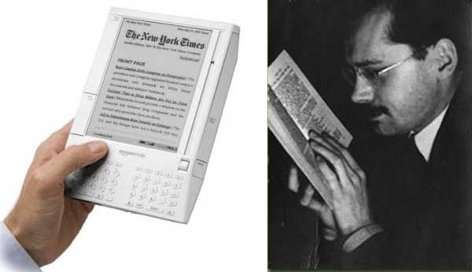

-
The Aura of Literature in the Age of Its Virtual Dissemination
by Daniel Pearce May 11, 2010

The London Review of Books recently commemorated its thirtieth anniversary by holding a series of lectures and discussion panels in New York City. The final installment of the series was a panel entitled “The Author in the Age of the Internet,” which featured John Lanchester, a novelist, critic, and contributing editor to the magazine; Colm Tóibín, a novelist and critic; James Wood, a critic and member of the editorial board; Mary-Kay Wilmers, editor; and Nicholas Spice, publisher. (Andrew O’Hagan, a scheduled panelist, was withheld by volcanic ash.)
After a passing reference to Walter Benjamin, Spice framed the discussion by citing e-book revenue figures for 2009—they came in at over $100 million—and asking, open-endedly, what such dramatic technological changes imply for authors and readers today. In a sort of panel-wide disclaimer, the panelists immediately confessed their relative non-participation in the Web 2.0 zeitgeist: none have Facebook accounts (“Oh, God no,” Tóibín replied) and, though James Wood does use YouTube, he certainly does not engage in “recreational texting.”
Wood spoke for the panel in saying that his most formative reading experiences occurred before the advent of the internet. No writers, he claimed, anticipated this degree of “technological ferment” when determining their career paths. These remarks laid the groundwork both for nostalgic descriptions of an older mode of writing and for wooden complaints about the noise of the blogosphere, so hostile to literary thought; yet neither of these two lines of thinking were pursued more than cursorily. Tóibín did address the loss of anonymity and solitariness induced by the internet’s totality, but he quickly turned to a positive consequence of this loss: “the end of gay loneliness.”
When the e-book came up again, it was treated tentatively, as if the panelists were unwilling to let it become the focus of the evening. (With little fuss, a consensus emerged that the e-book format is clunky but will take over.) One of the most interesting exchanges touched upon the e-book only obliquely: Spice asserted that writers become writers because they want fame and Lanchester disagreed. Lanchester asserted that he, as a novelist, is driven instead by the desire to create a holistic “thing” and to have people respond to that thing. He delivered his words with an unexpected gravity, and it was startling to hear him use such a hearty, toothsome term to describe a form whose very materiality is in question. Lanchester, while reserved in his optimism, implied that this “thingness”—a definite “something”—will and must survive the various innovations of Apple, Google, and Amazon. By extricating the substantive, physical-sounding aspect of the book from its actual physicality, Lanchester suggested a precondition for the book’s continued existence, sprung from the sort of steely hopefulness that is now scarce in the publishing industry.
Elsewhere, in a recent interview with The Atlantic, novelist Paul Theroux expressed what has become a familiar, almost generic, complaint about the e-book and its inexorable rise to predominance: “something certainly is lost—the physicality of a book … sometimes a talisman.” Wistful and sympathetic to Theroux, public conversations among literary and publishing traditionalists have tended towards this vocabulary, bemoaning the absence of a “something” in the e-book, while prizing the “physicality” of the printed book, its status as a “talisman.” Though these lines of thought—which often appear, modified only by rhetorical animus, as full-blown lines of argument—make sense to anyone who has cherished a single volume and populated it with markings, their vagueness remains striking. Often beginning with a word like “physicality,” a concept opposed to vagueness by definition, they are then loosed back into the language cloud of the “talismanic,” the ineffable. The qualities of the moribund* book that will be missed, it seems, are bound up with the book’s physicality without being fully explained by it; either the very reasons for missing the book resist explanation, or the only explanations for missing it resist precision.
Walter Benjamin’s canonical “The Work of Art in the Age of Its Technological Reproducibility” has proven a consistent reference point throughout this unfolding drama, supplying the e-book-averse with the cryptic core of their relative Ludditism. The essay, invoked by overeager web-publishing entrepreneurs and nail-biting intellectuals alike, lends itself more fully to the latter group, to the Therouxs (call them “bibliophiles”) who are rightly distressed by the unsentimental and degraded new form in which literature is now cast. Benjamin is their model as he defends an apparently antique way of apprehending a cultural product (i.e. visiting a museum to view an original sculpture, as opposed to viewing a reproduction of that same sculpture in a book); using a fantastic analytic power to circumscribe something as nebulous as that cultural product’s “aura.” Even when Benjamin is absent from discussions about the e-book, his specter lingers, hovering over every mention of a “talismanic” text. And yet his essay’s implications for our current print crisis are rarely discussed with any thoroughness—after a cursory mention of the physical book’s “aura,” the conversation is over. This could easily be because “The Work of Art” is overly familiar, even exhausted. (Most humanities students I know could locate at least five mentions of the essay in their accumulated syllabi.) It is such an established touchstone that to convey its larger meaning may only require such a cursory mention of “aura.” The meat of Benjamin’s essay does, however, have a tremendous amount to tell us about what is lost to the e-book, for something certainly is lost.
As print continues its descent, “The Work of Art” appears to Old-Guard readers and writers as most useful for its empathy. (That the auras of artworks are being held hostage by immaterial reproductions must resonate with the present mood.) Though Benjamin’s discussion revolves around the essential singularity of a work of visual art—upon emerging from the presses, books are anything but singular—his arguments about physical presence have uncanny relevance here: “In even the most perfect reproduction, one thing is lacking: the here and the now of the work of art—its unique existence in a particular place.” For Theroux, an edition of a book presumably isn’t born unique, but, through apprehension, through its passage from one pair of hands to another, through the accretion of marginalia, and through existing in real time, it achieves a singularity and, consequently, a talismanic authenticity. This authenticity is almost synonymous with the artwork’s “aura,” with its
highly sensitive core, more vulnerable than that of any natural object. That core is its authenticity. The authenticity of a thing bein the quintessence of all that is transmissible in it from its origin on, ranging from its physical duration to the historical testimony relating to it. Since this testimony is founded on the physical duration, the former, too, is jeopardized by reproduction, in which the physical duration plays no part. And what is really jeopardized when the historical testimony is affected is the authority of the object.
One might encompass the eliminated element within the concept of the aura, and go on to say: what withers in the age of the technological reproducibility of the work of art is the latter’s aura.
If one is to transpose Benjamin’s definition of authenticity to address the e-book, one quickly confirms the latter’s fundamental lack of the former.** Yet this notion of authenticity can, when talking about one text format in relation to another, seem somewhat unimportant and, worse, sentimental. After all, the aura-filled features of the weathered, inter-generational book—the one that bibliophiles so love—are relatively superficial. What gives this notion of authenticity its urgency is its consideration within the context of a larger, threatened book culture: think of the independent bookstore, many say, and of the most venerable of institutions, the library! The disappearance of aura then poses not only a threat of desacralization, as it did upon the publication of “The Work of Art,” but now, also, an existential one.***
The endangered availability of physical books (from a specific site, for free) seems negatively proportional to the burgeoning availability of downloadable books (everywhere, at a uniform price). The library—a stronghold of tradition, now back-lighting the moon—can then find its place in Benjamin’s statement that “the technology of reproduction detaches the reproduced object from the sphere of tradition.” New e-ways of encountering literature are, in their very nature, removing us from a “sphere of tradition,” in some ways for the better and in some ways for the worse. “The sphere of tradition” is an interesting formulation, as it suggests “tradition” to be a consolidated, physical cluster of ideas, a singular site where people gather in order to take part in an historic community. The library is such a sphere, and, in its current incarnation, it is being steadily displaced by this new mode of perceiving whole books.****
In a related understanding of “tradition,” the word suggests different ways of reading that could be identified as such by the authors of a large (for our purposes, Anglophone) pantheon. These ways of reading would include all manner of stereotypes, most of which involve “curling up”: curling up in front of a fire with a book, curling up in bed with a book, curling up on a dappled picnic blanket with a book, etc. Without attaching a positive or negative charge to the e-book, one could hazard a guess that a writer as capaciously thinking and feeling as, say, George Eliot would find utterly alien the introduction of an e-reader to any one of these scenarios. For while these ways of reading are not timeless, they have certainly carved out their place in “the sphere of tradition.”
Benjamin argues for the possibility of uncovering the sources for such shifts in ways of reading: “if changes in the medium of present-day perception can be understood as a decay of the aura, it is possible to demonstrate the social determinants of that decay.” Under contemporary circumstances, these social determinants are easily identifiable. Ken Auletta’s recent New Yorker piece about e-readers cites “a close associate” of Amazon CEO Jeff Bezos, who claims, “What Amazon really wanted to do was make the price of e-books so low that people would no longer buy hardcover books. Then the next shoe to drop would be to cut publishers out and go right to authors.” Regardless of one’s feelings towards the Kindle, the social determinants underpinning the device’s ascendancy are sinister. Auletta’s characterization of Bezos is scathing, and the reader leaves the piece convinced that Bezos is the last person who should be the preeminent agent of literary change. The iPad—called the “Jesus tablet” by some publishers for the possibility of salvation it offers—and Apple CEO Steve Jobs are given a more flattering treatment. (Google, in its effort to digitize all books, is also a favorable competitor in this delirious brinkmanship.) Jobs comes off as less megalomaniacal than Bezos, and he is demonstrably less interested in enslaving (and possibly annihilating) publishers. The Mac Bookstore’s agency model, announced in conjunction with the iPad, does give publishers more autonomy than Amazon, which has enforced a notoriously restrictive approach to pricing. Still, Jobs is cynical about the future of books, and his involvement with the publishing industry appears perfunctory.
It’s quite possible that the most important “something” lost to the e-book is not ineffable at all—maybe that “something” is simply a champion of this new mode of reading who is actually invested in a pluralistic (rather than fiscally consolidated) literary community. This statement rolls of the tongue in the most idealistic, naïve way, as if it’s a shock that Bezos’s acceleration of the transition to the e-book stems from anything but a will to market control. Still, if aura hasn’t already evacuated the book, Bezos and Jobs are not likely to be hospitable to it.
The reality is gray, however. We’ve lived with Benjamin’s argument for three quarters of a century now, and it feels anachronistic as well as accurate to eulogize aura now. Inchoate nostalgia, private and inexplicable, may be a response to the rise of the e-book more appropriate than noisy discursive brio. As Ted Striphas illustrates in his excellent book The Late Age of Print, the story of print is the story of alarmed voices declaring the dissolution of something like “aura.” For centuries, emergent technologies have repeatedly promised to estrange authorial intention from its appearance as text. Yet these arrivals —movable type, the typewriter— initially perceived as threats to writing’s inviolable integrity, have actually given shape to now familiar ways of creating and consuming literature. This shape, which once put the poem in jeopardy of becoming a telegram, is in an ongoing process of being naturalized: “The intellectual history of reading and writing technologies consists, as it were, of a recursive series of laments about the apparent incapacity of these technologies to represent or manifest fully—the word, presence, personality, meaning, intention, and beyond.” The flip-side of this coin would be to admit that there is some truth to the all the alarmism, that writing is indeed becoming depersonalized and stripped of aura. Perhaps the best we can do is hope that “the word, presence, personality, meaning, intention, and beyond” will remain as transmissible onscreen as they are off.
* Despite my sensationalism, the alarmism of publishers, and Amazon’s somewhat premature celebrations, few without vested interests actually regard the printed, physical book itself as imminently moribund. And while many roll their eyes and yawn upon hearing yet another Chicken Little-ish declaration of “print is dead,” these declarations do offer a coded way of saying something very real: that the physical book’s currency as a cultural product is increasingly and dramatically curtailed.
**This opens up larger questions that the industry will have to face once more e-readers and e-editions of single titles are available, namely questions having to do with authenticity and piracy. (There is already an abundance of information available on what Copyright and Technology calls “The E-Book DRM Mess.”) Very shortly, desultory and philosophical determinations of whether or not a book is “authentic” will have no traction in the face of real and legalistic ones.
*** As if libraries weren’t suffering enough already.
**** Libraries are already responding to the imperatives of the e-book, promising a future library that is physically decentralized. It is heartening to see libraries adapting to such an unfriendly landscape, even if their adaptations run counter to the interests of the bibliophile.